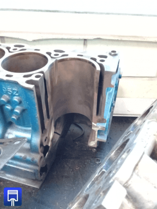
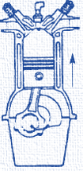
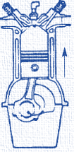
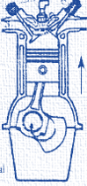
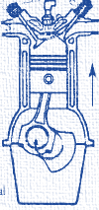
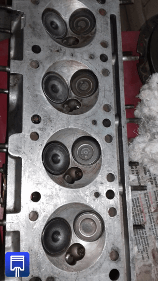
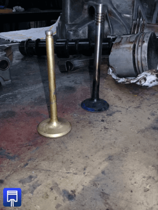

-
Introducción.
Un motor de combustión interna basa su funcionamiento en el proceso como tal lo indica su nombre, en la quema de una mezcla de aire-combustible dentro de un espacio cerrado que para el caso de los vehículos es la cámara de combustión, esto con el fin de obtener energía para que el vehículo se pueda desplazar.
El funcionamiento de un motor de cuatro tiempos es el siguiente.
Admisión en el primer tiempo la válvula de admisión abre y el pistón baja permitiendo que la mezcla entre al interior de la cámara de combustión. 
 
Compresión la válvula de admisión se cierra y el pistón sube hasta el punto muerto superior, para comprimir la mezcla.
Explosión Con la mezcla comprimida, la bujía suelta una chispa para quemar el combustible. Con esto el pistón es empujado al punto muerto inferior
Escape con el pistón bajando en el interior del cilindro, la válvula de escape se abre permitiendo que los gases desalojen la cámara de combustión.
En los motores tipo diésel, el funcionamiento es prácticamente el mismo pero lavariante es que en este tipo de motores ya no son necesarias las bujías pues por las características del diésel este se inflama automáticamente al ser expuesto a grandes temperaturas.
-
Valvulas.
Las válvulas son un componente importante en la combustión del motor, permiten el acceso del aire y de la gasolina, además de sacar los gases obtenidos de la combustión.
Actualmente los motores utilizan más de dos válvulas por cilindro pues con las distintas configuraciones se puede obtener más potencia, menor consumo de combustible o incluso reducir el costo de producción del vehículo.

Existen motores con 2 válvulas por cilindro hasta 5 válvulas por cilindro. Tener una mayor cantidad de válvulas permite mayor entrada de combustible a la cámara de combustión. Las válvulas funcionan con ayuda de otro componente llamado árbol de levas, este componente empuja las válvulas hacia el interior de la cámara de combustión permiten que entre combustible o salgan gases resultantes de la combustión. Los motores tipo DOHC cuentan con doble árbol de levas.
Cada uno de los árboles se encargan de una corrida de válvulas por lo que los balancines ya no serán necesarios en este tipo de motores.

-
Turbo cargador
Un turbo es un compresor que funciona por los gases del escape, cuya misión es presionar el aire de admisión, para de este modo se pueda incrementar la cantidad de aire que entra en los cilindros del motor, permitiendo que se queme eficazmente más cantidad de combustible y obteniendo más potencia pues un motor con turbo, aunque sea de pocos cilindros, fácilmente superara los 100 hp.
-
Intercooler.
La función principal del intercooler es enfriar los gases que salen del turbo a altas temperaturas, este componente comúnmente va instalado con un turbo cargador pues el turbo calienta el aire que utiliza y el intercooler reduce su temperatura para que se pueda introducir mayor cantidad de mezcla en la cámara de combustión.
-
Supercargador.
El súper cargador funciona casi igual al turbo cargador pero la diferencia es que a diferencia del turbo, este no va adaptado al múltiple de escape y no funciona con los gases se escape, el supercargador es movido directamente por el giro del motor, se conecta al eje del motor, esto permite una mayor entrega de potencia e incluso más suave que el turbo.